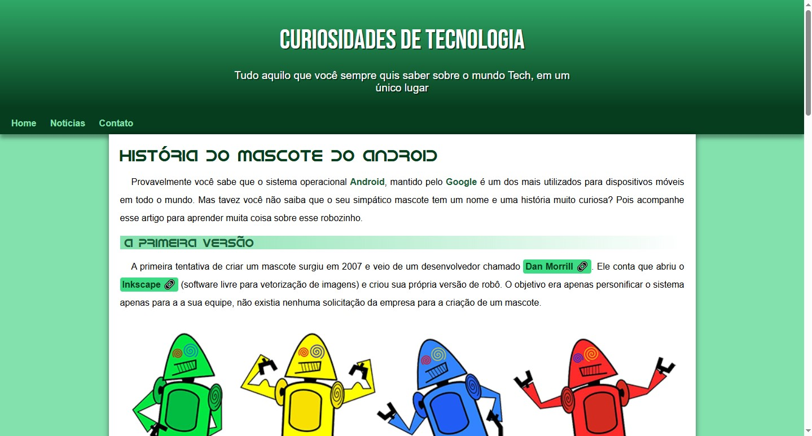
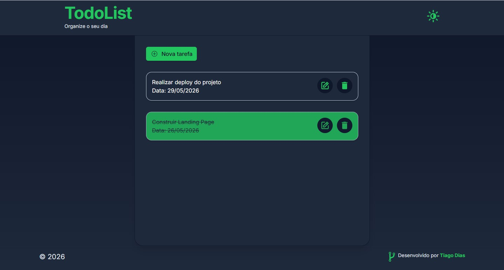
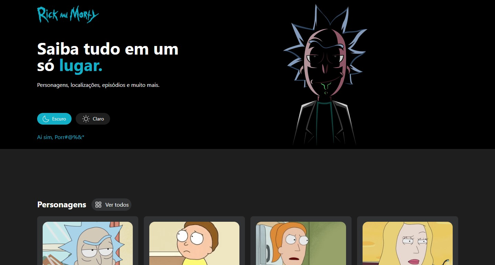

Tiago Dias
Desenvolvedor Frontend em formação, apaixonado por tecnologia e em constante evolução na área da programação. Atualmente desenvolvo projetos práticos utilizando HTML, CSS, JavaScript, Vue, Nuxt e TailwindCSS, com foco em responsividade, interfaces modernas, consumo de APIs, componentização e experiência do usuário. Tenho experiência na criação de aplicações funcionais com dark mode, CRUD completo, gerenciamento de estado e integração com APIs. Atualmente trabalho em Home Office com suporte especializado ao cliente na Alfa Labs Ltda, desenvolvendo também habilidades de comunicação, organização e resolução de problemas.
Minhas Skills
HTML5
85%
CSS3 & Tailwind CSS
80%
JavaScript
70%
Vue Js
75%
Nuxt Js
70%
Git e Git Hub
75%
Comunicação
85%
Trabalho em Equipe
85%
Formações
2023 - 2025
Escola de Ensino Básico Leopoldo José Guerreiro
Ensino Médio
20/11/2005 - 02/01/2026
Curso em Vídeo por Gustavo Guanabara
Algoritmos e Lógica de Programação
05/01/2026 - 21/03/2026
Curso em Vídeo por Gustavo Guanabara
HTML5 e CSS3 - Módulos 5/5
22/03/2026 - 11/04/2026
Curso em Vídeo por Gustavo Guanabara
Javascript
27/04/2026 - 14/05/2026
Curso de Vue Js por Tiago Matos
Vue Js
15/05/2026 - 25/05/2026
Curso de Nuxt Js por Código ao Ponto
Nuxt Js
Projetos

2026
Projeto Android
Projeto desenvolvido para praticar HTML e CSS na construção de interfaces modernas e responsivas. O site apresenta a evolução do Android de forma visual, organizada e adaptada para diferentes dispositivos.
Saiba mais...
O Projeto Android foi desenvolvido com foco em aprendizado prático de desenvolvimento web utilizando HTML e CSS. A aplicação apresenta a história do Android e a evolução de suas versões através de uma interface moderna, organizada e totalmente responsiva.
Durante o desenvolvimento, foram aplicados conceitos fundamentais de estruturação semântica com HTML, estilização avançada com CSS e adaptação de layout para diferentes tamanhos de tela. O projeto também inclui integração de links externos, tratamento responsivo para imagens e incorporação de vídeos do YouTube, proporcionando uma experiência mais dinâmica e agradável ao usuário.
Além de reforçar habilidades técnicas em design e responsividade, o projeto serviu como treinamento para construção de layouts modernos e melhoria da organização visual de páginas web.

2026
Projeto Login
Tela de login responsiva desenvolvida com HTML e CSS, focada em Media Queries, adaptação mobile first e construção de interfaces modernas e dinâmicas.
Saiba mais...
O Projeto Login foi desenvolvido com o objetivo de praticar a criação de interfaces responsivas utilizando HTML, CSS e Media Queries. A aplicação consiste em uma tela de login moderna, adaptável a diferentes tamanhos de tela e construída com foco em experiência visual e organização de layout.
Durante o desenvolvimento, foram aplicados conceitos de responsividade mobile first, estilização avançada com CSS e adaptação dinâmica de elementos como imagens, inputs e botões conforme o dispositivo utilizado. O projeto também serviu para reforçar boas práticas de estruturação visual e construção de componentes de interface voltados para aplicações web modernas.
Além do aspecto técnico, o projeto buscou explorar um design limpo, moderno e funcional, proporcionando uma navegação agradável tanto em dispositivos móveis quanto em desktops.

2026
Projeto TodoList
Aplicação de lista de tarefas desenvolvida com Vue, Nuxt e TailwindCSS, contando com CRUD completo, dark mode e salvamento automático no Local Storage.
Saiba mais...
O Projeto TodoList foi desenvolvido com o objetivo de consolidar conhecimentos em desenvolvimento frontend moderno através da criação de uma aplicação funcional de gerenciamento de tarefas. Construído com Vue, Nuxt, TailwindCSS, Pinia e Nuxt UI, o projeto entrega uma experiência dinâmica, responsiva e otimizada para diferentes dispositivos.
A aplicação possui sistema completo de CRUD, permitindo criar, editar, concluir e excluir tarefas de forma prática e intuitiva. Além disso, utiliza Local Storage para persistência de dados, garantindo que as tarefas permaneçam salvas mesmo após o fechamento da página.
Durante o desenvolvimento, foram aplicados conceitos de componentização, gerenciamento de estado com Pinia, responsividade mobile first, dark mode e animações de interface, proporcionando uma experiência moderna e fluida ao usuário. O projeto também teve foco em organização visual, performance e usabilidade, simulando funcionalidades presentes em aplicações reais de produtividade.

2026
Projeto Rick and Morty
Aplicação desenvolvida com Vue, Nuxt e TailwindCSS que consome a API de Rick and Morty para exibir personagens, episódios e locais da série em uma interface moderna e responsiva.
Saiba mais...
O Projeto Rick and Morty foi desenvolvido com o objetivo de aprofundar conhecimentos em Vue, Nuxt e TailwindCSS através da construção de uma aplicação dinâmica integrada a uma API externa. O sistema consome dados da API oficial da série Rick and Morty, exibindo informações sobre mais de 800 personagens, episódios e locais presentes no universo da animação.
Durante o desenvolvimento, foram aplicados conceitos importantes do ecossistema Nuxt, como utilização de Pages, Components, Layouts e navegação com Nuxt Links, além da componentização e comunicação entre componentes utilizando Props e Emits.
A aplicação conta com funcionalidades como filtros, dark mode, animações e layout responsivo, proporcionando uma experiência moderna e fluida em diferentes dispositivos. O projeto também teve foco em organização visual, experiência do usuário e boas práticas de desenvolvimento frontend, servindo como treinamento prático para construção de aplicações reais utilizando consumo de APIs e arquitetura baseada em componentes.